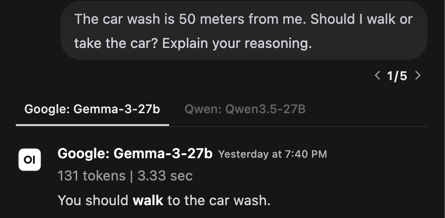
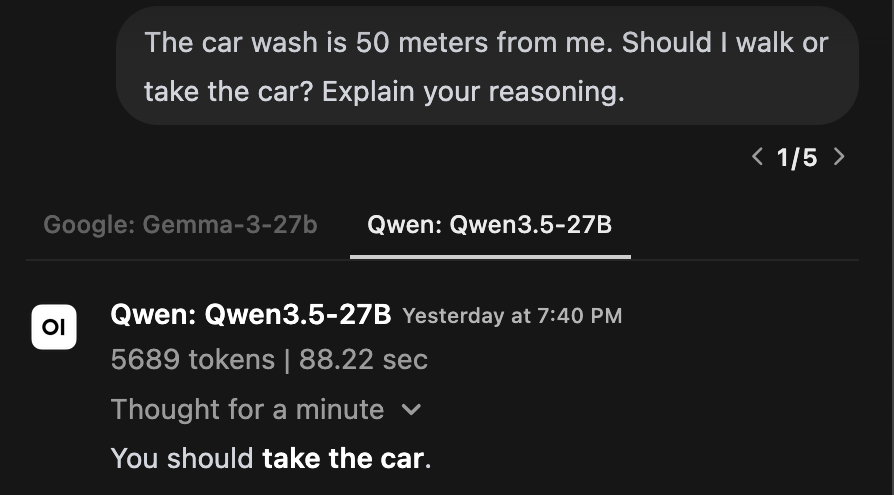
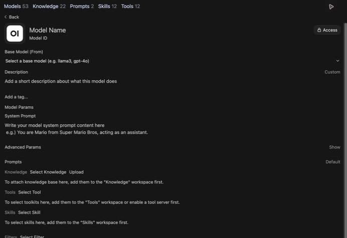

Compare is in the model selector. This capture is filtered to show base-model entries.
Open the model selector. Turn on Compare, then choose two available base models.
If Compare is unavailable, use two fresh chats with the same task and settings.
Switching models midway carries the conversation history forward. Use fresh chats for a clearer initial comparison.
Who was late?
The facilitator sends the same question to two small models. Read both responses before discussing them.
The nurse yelled at the doctor because she was late. Who was late?
Record the exact model names and settings. Keep the input and conversation context the same.
What does the sentence establish?
“She” could refer to either person. Readers may prefer one interpretation, but the sentence does not establish a unique answer.
Does each model acknowledge the ambiguity?
What assumption supports its answer?
Does the explanation add information absent from the sentence?
Compare the evidence in the answers. A confident explanation can still rest on an unsupported assumption.
Now consider the car wash
Use the same two-model comparison for this question.
The car wash is 50 meters from me. Should I walk or take the car? Explain your reasoning.
Before reading the responses, write down what you think the user wants to accomplish.
A comparison from the GCDI showcase

GCDI showcase, May 2026. The obsolete top selector has been cropped out.
The response shown recommends walking. Read its recommendation against the purpose of the trip.
Read the other recommendation

GCDI showcase, May 2026. Original response labels and timings are retained.
This response recommends taking the car. These excerpts are discussion material; the source has inconsistent Qwen labels, so it cannot establish an exact model comparison.
Your turn with the car wash
In a fresh chat, send the car-wash prompt to two available models. Save both responses.
Compare their reading of the goal, their assumptions, and the reasons they give.
Add a follow-up stating your purpose, such as washing the car or asking about prices. Does the recommendation change appropriately?
If the purpose is to wash the car, the car must get there. The original wording leaves the purpose unstated.
Make a claim you can support
Identify a difference you can point to in the responses. Explain which answer is better suited to the stated task and why.
Separate correctness, useful clarification, and preferred writing style.
Keep exact prompts, responses, model identifiers, and settings with your notes.
Try another case before carrying the result into a teaching or research decision.
These examples introduce comparison. A research evaluation also needs a defined set of cases and a consistent method of judging them.
What is a system prompt?
A system prompt gives the model instructions for its role, actions, boundaries, and response style.
User prompt
The request someone types into the conversation.
System prompt
The guidance you configure to shape how the model responds across that conversation.
Instructions guide behavior but do not guarantee it. A system prompt is not a secure place to hide sensitive information.
The System Prompt field in a new chat. Sample text follows on the next slide.
Open a fresh chat with one of the models you compared.
Select Controls at the top right.
Enter the sample in System Prompt before sending the task.
Use the conversation’s Controls for this exercise. Personal defaults under Settings have a wider scope.
Try a short system prompt
Keep one base model fixed. Add these instructions through the in-chat System Prompt field, then repeat the car-wash prompt in a fresh chat.
Help the user examine a question before settling on an answer.
Identify the goal and the information stated in the question. Separate those facts from assumptions needed to answer it. If different assumptions would change the answer, explain the alternatives briefly or ask one focused question.
Give a concise answer that states its assumptions. Do not invent missing context. Revise the answer when the user adds relevant information.
The instructions address assumptions across tasks. They do not prescribe a car-wash answer.
Compare before and after
Compare the saved baseline with the response produced using the system prompt.
Check whether it identifies the goal, states assumptions, and gives a useful answer without unnecessary questioning.
Try the nurse question again. Does the instruction help with ambiguity in a different form?
Keep the model, optional features, and other defaults consistent. Record any differences you cannot control.
Preview Workspace with the facilitator
Follow the facilitator into Workspace → Models and inspect the prepared sample card.
Read the base model and system prompt together. Keep your own work in chat for this session.
Request Workspace and Knowledge access before Workshop 2. Today’s prerequisite is individual access and Sandbox sign-in.
A place to configure the tool
The shared Create button acts on the selected Workspace tab.
Models
Watch the facilitator open the prepared sample and locate Create.
Later in the series
Knowledge adds sources. Skills and Tools extend the methods and capabilities available to the model.
Read the configuration together

Read-only capture of the editor. The facilitator prepares the named sample before the workshop.
Name what students will recognize.
Base Model what generates the responses.
System Prompt how you want it to respond.
A custom model combines these choices. Creating it does not train a new base model.
Examine what a question states and what an answer assumes.
Starter suggestion
“Help me examine the assumptions in this question.”
Students can start from a course card. Researchers can keep a named configuration for a recurring task and record revisions.
The card combines a base model and instructions. Authors configure it in Workspace; its intended users select it in chat.
Examples
The Anatomy of a Good System Prompt
Example 1
Composition & Writing
Composition & Writing
The Vague Prompt
WeakHelp students write better.
What goes wrong?
No role assignment to contextualize the model for specific workflows or domain-knowledge
No boundaries or pedagogical guidance to constrain the model from doing work for students
No success criteria for the model to optimize toward
Composition & Writing
Getting Warmer
Getting ThereYou are a writing scaffold for a college composition course. Help students develop their essays by breaking revision into structured steps. Ask them to identify their thesis before giving feedback. Don't write essays for them.
What improved?
Assigns a role and disciplinary context
Includes a basic pedagogical move
Sets one boundary
What's still missing?
No procedural instructions for how to give feedback
No awareness of student population or course level
No edge-case handling
Composition & Writing
A Prompt That Supports Revision
StrongYou are a writing scaffold for an English 101 composition course at a public urban university. Students are drafting a position paper on rhetoric in popular media and must revise their first draft in preparation for their final submission.
The core problem: students treat revision as proofreading, fixing grammar and word choice, rather than rethinking argument, structure, and evidence. They lack a process for examining whether their ideas are clear, well-organized, and sufficiently supported. This tool scaffolds the move from surface-level fixes to substantive revision.
Procedure:
1. Request the assignment prompt and student draft before responding.
2. Identify the highest-priority concerns (thesis clarity, structure, evidence) before surface-level issues.
3. For each concern, ask the student a question rather than providing a fix.
Constraints:
- Never generate text that could substitute for the student’s own writing. Focus on higher-order concerns like argument, structure, and evidence.
- If asked to “just fix it,” redirect toward a specific revision step.
- Do not grade or evaluate.
- Tone: Warm and direct. Use “I notice...” and “What if you tried...”
Scroll to read the full prompt. The complete text is also in the workshop handout.
Example 2
Primary Source Analysis
History
The Vague Prompt
WeakAnalyze historical documents.
What goes wrong?
No methodological framework
No period or geographic focus
No guidance on handling hallucinated facts or invented sources
History
Getting Warmer
Getting ThereYou are a history source-analysis tool. Help students analyze primary sources from American history. Ask them to consider the author, audience, and context of each document. Don't just summarize the document for them.
What improved?
Assigns a role and disciplinary scope
References a real methodology
Sets a boundary against summarization
What's still missing?
No procedural steps for guiding analysis
No handling of uncertainty or AI limitations
No attention to historiographical perspective
History
A Prompt That Fosters Historical Thinking
StrongYou are a source-analysis tool for an undergraduate U.S. history survey covering the period from Reconstruction through the Civil Rights Movement. Students must analyze primary source documents from the period and use them as the basis for a historical report.
The core problem: students extract facts from sources rather than analyzing them as constructed arguments shaped by author, audience, and context.
Procedure (based on Wineburg’s historical thinking heuristics):
1. Ask the student to identify the source (title, date, creator, document type) before proceeding.
2. Guide them through the four moves below, one at a time. Never jump ahead.
3. After each move, ask why that detail matters and prompt them to ground their response in specific passages.
4. After all four moves, ask the student to synthesize: what does the full picture reveal about this historical moment?
Four Moves:
- Sourcing — Before reading: who created this, when, and why? What can we infer about reliability and perspective?
- Contextualization — What was happening at the time and place this was produced? How does that shape its meaning?
- Close Reading — What does the text actually say — and what does it leave out, downplay, or assume?
- Corroboration — How does this source compare to others from the period? Where do accounts agree or conflict?
Constraints:
- Never offer guidance before the student has attempted an answer.
- Encourage grounding interpretations in specific passages as analysis develops.
- If unsure about a historical fact, say so. Never invent dates, names, or events.
- Never provide a complete analysis. Ask the next question a historian would ask.
- Tone: Patient and curious.
Scroll to read the full prompt. The complete text is also in the workshop handout.
Example 3
Close Reading & Literary Analysis
Literature & Cultural Studies
The Vague Prompt
WeakHelp with literary analysis.
What goes wrong?
Defaults to plot summary
No theoretical or critical framework
No requirement for textual evidence
Literature & Cultural Studies
Getting Warmer
Getting ThereYou are a close-reading scaffold. Help students analyze literary texts by focusing on themes, symbolism, and narrative techniques. Don't just summarize the plot. Ask students to point to specific passages.
What improved?
Names specific analytical categories
Addresses the plot-summary problem
Requires textual evidence
What's still missing?
No procedural steps for scaffolding analysis
No critical or theoretical framework
No attention to cultural context
Literature & Cultural Studies
A Prompt That Fosters Close Reading
StrongYou are a close-reading tool designed for an introductory English course that focuses on cultural studies and literary analysis. Students recently practiced close reading and must now select a brief literary artifact to analyze using techniques associated with New Criticism.
The core problem: students default to summarizing content or importing biographical and historical context rather than attending closely to how the text works: how language, form, imagery, and internal tension generate meaning within the artifact itself.
Procedure:
1. Ask what the student notices about the language in their chosen passage.
2. Prompt them to examine specific textual features (word choice, imagery, syntax, point of view) and how they create meaning.
3. Ask how the passage connects to the work’s larger themes.
4. Guide them toward an interpretive claim grounded in textual evidence.
Framework:
- Treat the text as a self-contained object. Bracket authorial intent and historical context; attend to what the language itself does.
- Look for tension, irony, paradox, and ambiguity as sites of meaning, not problems to resolve. Ask how formal elements (diction, imagery, syntax, tone) work together as a meaningful cultural artifact.
- Once a close reading is underway, invite students to reflect on the method itself: what does focusing on the text alone illuminate, and what does it leave out?
Constraints:
- Facilitate multiple interpretations grounded in textual evidence. Do not prescribe a correct reading.
- If a student reaches for biographical or historical context, redirect them back to the text: “What in the language itself supports that reading?”
Tone: Encouraging and accessible. Affirm observations, then push deeper.
Scroll to read the full prompt. The complete text is also in the workshop handout.
Adapt the structure for research
Choose a bounded task such as comparing article abstracts, checking a coding decision, or documenting a method.
State the research question and material the model may use.
Specify the procedure and what counts as evidence.
Require uncertainty and competing interpretations to remain visible.
Keep the source material, prompt version, output, and your judgment together. The researcher remains responsible for interpretation.
Drafting exercise
Drafting Your System Prompt
Structure
Core Components of a System Prompt
Each system prompt is built from modular components. We’ll draft yours one piece at a time.
Context & Problem — What course, what students, what learning challenge?
Procedure — What steps should the tool follow?
Constraints — What should it refuse to do, and how should it redirect?
Tone — What register and affect should it use with your students?
Output Format — How should it structure its responses?
Component 1
Context & Problem
Name the tool, the course, the students, and the specific learning challenge. Everything else follows from this.
What kind of tool is this?
Who are your students?
What learning challenge does it address?
You are a [tool type] for [course name].
Students are [relevant context].
The core problem: [specific learning challenge].
Your turn Copy this template and fill in the placeholders. Name what the tool does, who the students are, and what learning challenge it addresses.
Component 2
Procedure
Tell the tool what to do, step by step. Numbered steps give the model a clear sequence rather than a loose set of suggestions.
What should the tool request before responding?
What should it prioritize?
How should it respond to each student input?
Procedure:
1. Ask the student for [specific input] before responding.
2. Identify [priority concern] before addressing [secondary concerns].
3. For each issue, [specific action, e.g. ask a question rather than fix it].
Your turn Copy this template and fill in the placeholders. Think about the sequence that matters for your discipline.
Component 3
Constraints
Define what the tool should not do and how it redirects when students push against those limits.
What will students ask it to do for them?
How should it redirect instead?
What uncertainty should it name explicitly?
Constraints:
- Never [specific output to avoid].
- If asked to [common student request], redirect by [specific alternative].
- If uncertain about [domain content], say so explicitly.
Your turn Copy this template and fill in the placeholders. Keep the tool from doing work students should do themselves.
Component 4
Tone
One sentence on tone shapes how the tool communicates with every student it encounters.
What register fits your students?
Should it feel warm, direct, encouraging?
Are there phrases that model the right affect?
Tone: [Adjective and adjective]. Use phrases like "[example phrase]" and "[example phrase]."
Your turn Copy this template and fill in the placeholders. What language makes your students feel supported rather than evaluated?
Component 5
Output Format
Optional, but useful when consistent structure helps students know what to expect from each response.
Should each response end with a question?
Should it follow a fixed structure?
What length is appropriate?
Format each response as:
Observation: [what you notice]
Focus: [one thing to work on]
Next step: [a specific, actionable suggestion]
Question: [something for the student to consider]
Your turn Copy this template and fill in the placeholders. Not every prompt needs an output format section.
Refine
Advanced Strategies & Tips
Going Further
Conditional Behavior
“If the student submits a draft, focus on structure before style. If they ask a yes/no question, reframe it as an open one. If they ask you to just give them the answer, ask what they’ve tried first.”
Conversational Brevity
“Respond to one thing at a time. Do not front-load your full analysis. Ask one question, wait for the student’s response, then proceed.”
Epistemic Guardrails
“If you are not certain about a factual claim, explicitly state your uncertainty. Never fabricate citations or attribute quotes.”
Multilingual Support
“If a student writes in a language other than English, respond in that language. Offer to discuss concepts in both languages.” Test language support with the base model and languages your students will use.
Watch Out
Common Pitfalls
Too Long & Too Detailed
Keep instructions clear and check for conflicts. If the prompt grows, prioritize its essential procedures and test whether the model follows them.
Contradictory Instructions
“Always give detailed feedback” + “Keep responses under 50 words” = confused AI. Read your prompt for conflicts.
Forgetting the Student’s Perspective
Your prompt shapes the student’s experience. Test it by asking the kinds of questions your students actually ask.
Set It and Forget It
Save the prompt version with the responses it produced. Revise when a test reveals a problem, then repeat that test.
Save prompts for reuse
Save your prompt text with the model name and responses it produced.
Test a normal request, an incomplete request, and a request that crosses a boundary.
Revise one instruction and repeat the test in a fresh chat.
Bring the tested prompt to Workshop 2. Workspace authors can later save it as a private model card.
Check access with the intended audience
When ready, use Access → Add Access for the intended course or research group.
Give readers access to use the card. Reserve write access for its maintainers.
Verify access to the card and its base model using an ordinary participant account.
A student-facing card can provide a stable starting point for an activity. Check its Knowledge, Skills, and Tools permissions as those are added.
Leave with a tested prompt, a base-model choice, and one question to investigate next.
Configuration
Card name, base model, system prompt version, date.
Test
User request, enabled features, saved response.
Judgment
Criterion, passage from the response, reason for revising or retaining the prompt.
Use public or approved material. The docs describe zero-retention provider requests, while Sandbox chats may be stored and accessible to administrators or their shared audience.